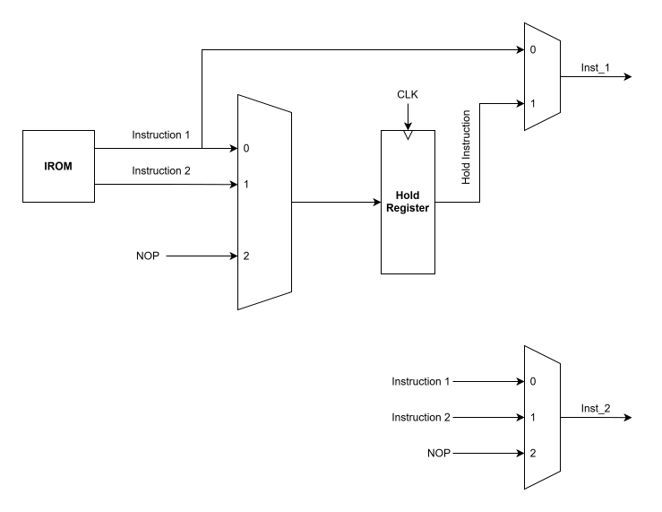
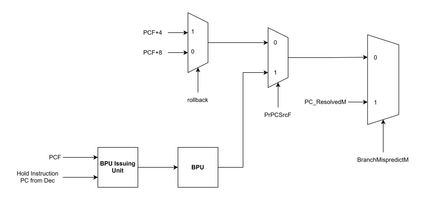
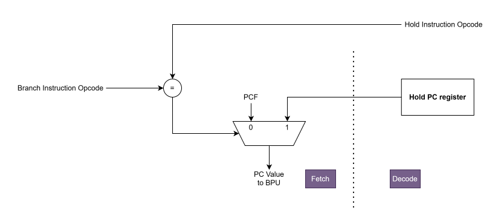

Superscalar Architecture¶
This section is a brief overview of fascinating but complex topics. In my DDCA notes, I have some really good examples regarding the techniques introduced here. If you want to learn more details, I highly recommend to check out those notes.
Pipelining exploits the potential parallelism among instructions. This parallelism is called, naturally enough, instruction-level parallelism (ILP). There are two primary methods for increasing the potential amount of instruction-level parallelism:
- Deep Pipelining
- Multiple Issue: A scheme whereby multiple instructions are launched in one clock cycle.
There are also two main ways to implement a multiple-issue processor, with the major difference being the division of work between the compiler and the hardware:
- Static Multiple Issue: An approach to implementing a multiple-issue processor where many decisions are made by the compiler before execution.
- Dynamic Multiple Issue: An approach to implementing a multiple-issue processor where many decisions are made during execution by the processor.
Static multiple-issue processors all use the compiler to assist with packaging instructions and handling hazards. In a static issue processor, you can think of the set of instructions issued in a given clock cycle, which is called an issue packet, as one large instruction with multiple operations. This view is more than an analogy. Since a static multiple-issue processor usually restricts what mix of instructions can be initiated in a given clock cycle, it is useful to think of the issue packet as a single instruction allowing several operations in certain predefined fields. This view also led to the original name for this approach: Very Long Instruction Word (VLIW).
Use Latency
Use latency is the number of clock cycles between a load instruction and an instruction that can use the result of the load without stalling the pipeline. For example, loads have a use latency of one clock cycle. In the two-issue, five-stage pipieline, the result of a load instruction cannot be used on the next clock cycle. This means that the next two instructions cannot use the load result without stalling.
In-Order Superscalar Architecture¶
In Mach-V, instead of seeking help from the compiler, I am going to implement an in-order superscalar processor. There will be a hardware unit to handle the instruction packaging during the execution and some other units used for different purposes, so technically it is a dynamic multiple-issue processor. As this architecture is rather complex, I will explain it part-by-part.
Instruction Issue Unit¶
Warning
To implement the 2-way in-order superscalar architecture, the processor should be able to read two instructions simultaneously from the IROM. This is achieveable by using the Block RAM and the example is provided by AMD.
The overal architecture of the instruction issue unit (IIU) is shown below.

Instruction Issue Unit
The IIU is implemented in the Decode stage. Whenever dependency arises between the instructions on the Instruction 1 wire and the Instruction 2 wire, the second instruction will be stored in a hold register and a "rollback" signal will be asserted to adjust next-PC value so that the next-PC coming into the IROM will be PC+4 instead of PC+8 (We will talk more about the Next-PC Logic in detail later). The held instruction will be issued in the next clock cycle.
Warning
The Instruction 1 and 2 represent the instructions on the Instruction 1 wire and Instruction 2 wire!
The three multiplexers in the figure each has their own purpose:
- The Hold Mux (Top Left): Controls what gets saved into the Hold Register. Inputs are Instruction 1 (
0), Instruction 2 (1), and NOP (2). - The Pipe 1 Mux (Top Right): Controls what enters the first execution pipeline. Inputs are Instruction 1 (
0) and held instruction (1). - The Pipe 2 Mux (Bottom Right): Controls what enters the second execution pipeline. Inputs are Instruction 1 (
0), Instruction 2 (1), and NOP (2).
And to understand its flow better, let's look at all the 4 possible cases:
The IIU evaluates Instruction 1 and Instruction 2 directly from the IROM.
- If No Dependency: Both instructions issue normally.
- Pipe 1 Mux Control:
0(Selects Instruction 1) - Pipe 2 Mux Control:
1(Selects Instruction 2) - Hold Mux Control:
2(Selects NOP, Hold Register remains empty) - Rollback Signal:
0(Next PC = PC+8)
- Pipe 1 Mux Control:
- If Dependency Detected: Instruction 2 cannot be issued simulatenously.
- Pipe 1 Mux Control:
0(Selects Instruction 1) - Pipe 2 Mux Control:
2(Selects NOP, Pipeline 2 is stalled) - Hold Mux Control:
1(Selects Instruction 2 to be held) - Rollback Signal:
1(Next PC = PC+4)
- Pipe 1 Mux Control:
In this case, the hold register has already contained a valid instruction. Because the processor issues in-order, the Held Instruction must go to Pipe 1. The IIU now evaluates dependencies between the Held Instruction and the instruction on the Instruction 1 wire.
- If No Dependency between Hold and Instr 1: Both can be issued.
- Pipe 1 Mux Control:
1(Selects Held Instruction) - Pipe 2 Mux Control:
0(Selects Instruction 1) - Hold Mux Control:
2(Selects NOP, Hold Register is cleared) - Rollback Signal:
0(Next PC = PC+8)
- Pipe 1 Mux Control:
- If Dependency Detected between Hold and Instr 1: Only the held instruction can be issued.
- Pipe 1 Mux Control:
1(Selects Held Instruction) - Pipe 2 Mux Control:
2(Selects NOP) - Hold Mux Control:
0(Selects Instruction 1 to be held) - Rollback Signal:
1(Next PC = PC+4)
- Pipe 1 Mux Control:
The behavior of superscalar instruction fecthin mechanism is illustrated in the following table assuming only the first two instructions are having dependency.
| Cycle | Fetch Stage | Decode Stage |
|---|---|---|
| 1 | Current Instructions: I0, I1 Next Instructions: I2, I3 rollback = 0 |
First Instruction: Null Second Instruction: Null held instruction: Null |
| 2 | Current Instructions: I2, I3 Next Instructions: I3, I4 rollback = 1 |
First Instruction: I0 Second Instruction: Null held instruction: I1 |
| 3 | Current Instructions: I3, I4 Next Instructions: I5, I6 rollback = 0 |
First Instruction: I1 Second Instruction: I2 held instruction: Null |
From this table, we can see clearly that the instructions on the Instruction 1 and Instruction 2 wires in the IIU in the Decode Stage are actually the current instructions in the Fetch Stage in the previous cycle. In the Decode Stage, a rollback signal will be generated combinationally and this immediately affects the next instructions in the current clock cycle.
Debugging Tips
A good way to debug the IIU is to draw a table like above manually. The procedure is as follows:
- Assume we are in cycle 1 now, first write the current instructions out first.
- The
Instr_1andInstr_2in the Decode stage of cycle 1 should come from the current instructions in the Fetch stage in the previous cycle, which is cycle 0. - The rollback signal in cycle 1 is generated based on the dependency between
Instr_1andInstr_2in the Decode stage of cycle 1. - Based on this rollback signal, write the next instructions in the Fetch stage of cycle 1.
- Move to cycle 2 and the current instructions will be just the next instructions in the Fetch stage of cycle 1. Repeat the same procedure.
TODO
Search and study how to detect the dependency between two instructions.
Next-PC Logic¶
As the normal Next-PC Logic, this part will contain several pipeline stages and it really depends on the execution flow. The architecture for the Next-PC logic is shown below.

Next-PC Logic
The Next-PC Logic has two paths:
- The upper path: This is to deal with the "rollback" signal from the IIU, which is already explained in the previous section.
- The lower path: This is to deal with the superscalar branch prediction unit.
The structure of the BPU Issuing Unit is shown below.

BPU Issuing Unit
The BPU Issuing Unit is implemented in the Fetch Stage for feeding the PC value to the BPU.
- If the held instruction is a branch, the PC value from the hold register in the Decode Stage is fed to the BPU.
- Otherwise, the
PCFwill be fed to the BPU as normal.
Success
The spirit for having this unit is that in the in-order superscalar architecture, the next issue packet can be either PCF+4, PCF+8 or the BTA of the PC value of the held instruction if it is a branch or the PCF.
Coming back to the Next-PC Logic, we have three multiplexers:
- The Rollback Mux (Top Left): Whenever the rollback signal is asserted in the Decode Stage, the next PC value will be
PCF+4; otherwise, it will bePCF+8. - The Prediction Mux (Middle): In the Fetch Stage, if the BPU predicts the target PC value of an instruction (
PrPCSrcF == 1'b1), the predicted PC from the BPU (PrBTAF) will be loaded. Otherwise, it passes the sequential PC through. - The Correction Mux (Right): If the prediction goes wrong (
BranchMispredictM == 1'b1), then the correct PC value will be loaded from the Memory Stage (PC_ResolvedM). This overrides everything else fetched in the current cycle.